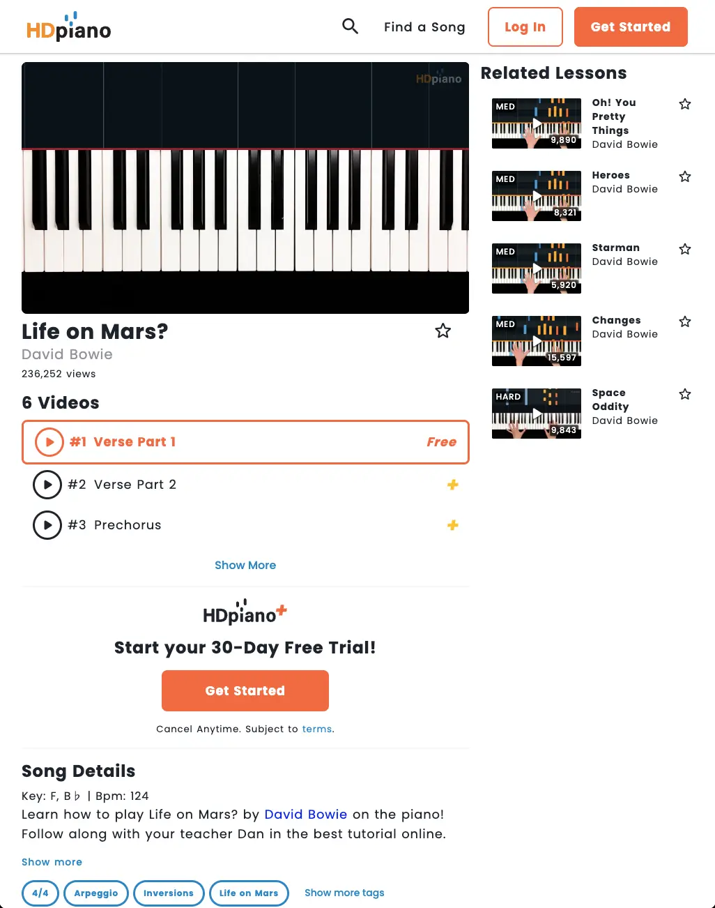

Harmonic
A music-themed atomic design system bringing harmony
Background
HDpiano is a subscription-based piano education company that offers step-by-step piano tutorials for popular hit songs. As the sole designer and front-end developer at the company, I work toward improving user experience and optimizing for business goals like conversion rate, engagement and retention. Below, I'll touch on a few key goals and the design processes that help us acheive them.
Goals
HDpiano is a subscription-based piano education company that offers step-by-step piano tutorials for popular hit songs. As the sole designer and front-end developer at the company, I work toward improving user experience and optimizing for business goals like conversion rate, engagement and retention. Below, I'll touch on a few key goals and the design processes that help us acheive them.
Harmonic Design System
As the company grows from a small group of musical content creators into a larger platform, there's a need for a 'single source of truth' to ensure consistency across different projects and paltforms. The musically themed 'Harmonic' design system includes a Figma-based component library and a brand style guide and its goal is to allow design, development, content and marketing teams to work in harmony
UI Components in Figma
Soloists are the basic building blocks of the look and feel of HDpiano and include things like Color, Icons, and Inputs.
Sections combine two or more soloists. For example, Text, Color and a Shadow combine to create a Button.
Ensembles consist of a section combined with one or more other sections or soloists. Together, a Card plus Inputs and a Button create Forms.
Orchestras are complete page layouts with well defined elements and spacing. Orchestras rely on the interconnectedness of smaller elements, while allowing for the flexibility to swap elements in and out.

Brand Style Guide
In addition to the component library, we created a brand style guide. It includes company-wide deisgn principles, guidelines for image treatment and logo usage, as well as clarification about the tone and voice of our content and copywriting.

The Result
Implementing this system has made the development process more efficient and has made our content and marketing efforts feel much more cohesive. One of my goals for the near future is to use Storybook.js or a similar tool to make things even easier to maintain and iterate upon.
The Lesson Page
This is where the learning happens! It's where our members spend most of their time, and it's the first page that most visitors see. That's because the first part of every multi-part video tutorial we create is offerred for free on YouTube, then people click through to our Lesson Page, where they can access the rest of the tutorial.
The Goal
A visitor coming from YouTube should experience no added cognitive load when landing on our Lesson Page. Without thinking, their muscle memory should allow them to quickly use the video controls, find relevant information about the content, and understand how to navigate the layout and options presented.
A Simple Approach
Our solution was pretty straightforward: make it feel like YouTube.
The Result
Since the change over from our legacy Lesson Page to the new YouTube-inspired one, we've seen a spike in conversion rate from this page as well as overall time spent on site. We attribute this to visitors' first impression now being one of familiarity, and to the way we've begun serving related content in a sidebar just like YouTube.
The Library Page
The Library page is where users go to browse our catalog of almost 2,000 song tutorials.
The Goals
-
1. A user should never feel stuck or out of ideas for songs to browse.
-
2. A user shouldn't be overwhelmed or while exploring such a large library.
-
3. This page should offer a path for users to start their free trial.
Curated suggestion tiles near the top of the page guide users gently into exploring the library. Infinite scrolling lets them explore without hitting a wall.
We tested designs with more filter and sort options and asked users which ones were most important. Then we observed a few hundred user sessions with HotJar and found that they'd been telling the truth! This helped us cut our filter and sort controls down to just the essentials.
A persistent CTA at the bottom of the page encourages visitors to start their free trial directly from this page without the need to open a menu, navigate to a new page, or encounter a paywall.
Concolusion
This is where the learning happens! It's where our members spend most of their time, and it's the first page that most visitors see. That's because the first part of every multi-part video tutorial we create is offerred for free on YouTube, then people click through to our Lesson Page, where they can access the rest of the tutorial.
The Goal
A visitor coming from YouTube should experience no added cognitive load when landing on our Lesson Page. Without thinking, their muscle memory should allow them to quickly use the video controls, find relevant information about the content, and understand how to navigate the layout and options presented.
A Simple Approach
Our solution was pretty straightforward: make it feel like YouTube.
The Result
Since the change over from our legacy Lesson Page to the new YouTube-inspired one, we've seen a spike in conversion rate from this page as well as overall time spent on site. We attribute this to visitors' first impression now being one of familiarity, and to the way we've begun serving related content in a sidebar just like YouTube.